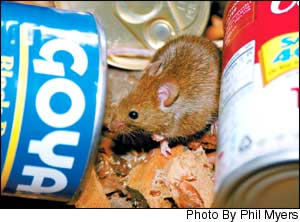
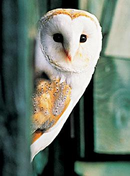
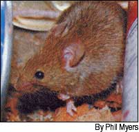
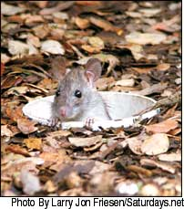
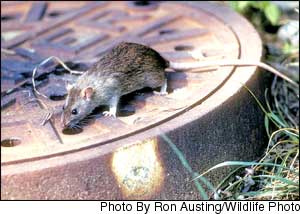
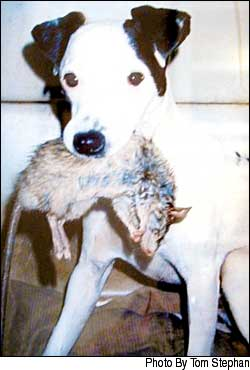

Issue #206 - October/November 2004
Use these techniques to keep your homestead vermin-free.
Rats and mice cause more damage inside our homes than any other mammal in the world. They spoil food; spread salmonella, hantavirus and 17 other diseases, and chew essential house parts such as electrical wires. Some species even kill young poultry and other livestock. Phenomenally fertile, a cute pair of mice living in your garage can grow into a gang of 20 or more in only a few months.
But you don’t have to use poisons to keep rats and mice from ruining food stuffs and livestock feed, or taking up residence in your attic. Instead, use the “seal up, trap up, clean up” strategy, recommended by the Centers for Disease Control and Prevention, supplemented with good common sense.
It’s important to understand that not all rodents are pests. Numerous species of small rodents are native to North America, including beneficial grasshopper mice that mainly eat insects. Most rodents prefer fields and woods to human habitats, but the opposite is true of three notorious species uniquely adapted to living around humans: the house mouse; the black, or roof, rat; and the Norway rat. These are the real troublemakers, and the better you know your enemies, the easier it will be to bring them under control.
Lining Up Predators
Ted Hazen, a third-generation millwright in Norfolk, Va., says that historically, cats have been the primary means of controlling mice in houses and in mills, where spilled grain is a constant rodent attractant. “A good mousing cat will eat 1,200 mice a year,” Hazen says, noting that female cats are usually much better mousers than males. “Like Puss and Boots, a male cat will put on his hat and go out to have fun. The female will stay home to catch the mice.”
Hazen says some cats are more gifted mousers than others, but even great mousing cats may be intimidated by big rats. In California, Tom Stephan uses Jack Russell terriers to catch rats, sometimes in combination with his trained Saker falcon (native to Europe/Asia), which picks up rats as the dogs flush them from their holes. “There is no other dog that’s better,” Stephan says. “They are a top-notch type-A hunting dog.” In addition to being willing to paw through just about anything to get to a rat, Stephan says, his Jack Russells go for the kill. “They’ll grab a rat and shake it until it’s dizzy and can’t bite back, then crush its vertebrae and rib cage.” It sounds gory, but so is removing rats from snap traps.
If you keep a barn cat or rat-minded dog, never scold them for bringing you their prey. And since rodents love pet food, it’s best to feed all outdoor animals in the morning and remove leftovers immediately. Cats and rodent-hunting dogs are great for preventing mice problems because their best talents lie in their ability to detect intruders in their home territory. But don’t expect a cat to bring a large mouse population under control, and it may take more than one dog to get rid of rats. “You need one to stand at one hole, and another to watch the other hole,” Stephan says.
His top tip for preventing rat problems in the first place is to host barn owls. “Get a barn owl nesting box or two if you have more than two acres.” Stephan has installed more than 1,500 barn owl boxes over the last decade. He usually puts them up on collapsible flagpoles so they can be taken down if needed. “The owls do an amazing job of hunting gophers, rats and mice,” he says, noting that some estimate a pair of barn owls will capture 50 rodents a week.
Building Better Mousetraps
Daytime rodent sightings, the presence of lots of droppings and chewed access holes are signs of a serious rodent problem. When rodent problems are too big for cats or dogs to handle, and you don’t want to wait for barn owls to move in and help you out, trapping is the best option.
Using poisons is a shortsighted approach with undesirable side effects, such as the accidental poisoning of dogs, cats and other animals that eat the bait. For example, in Arizona, coyotes, foxes, bobcats, hawks and owls have been brought to the Southwest Wildlife Rehabilitation Center after ingesting rat poison. Another problem is that you never know where a poisoned rodent will die. If it dies in a wall, you’re stuck with its smell for weeks.
Trapping is a better solution for serious rodent problems, but controversies rage over which methods are most humane. Glue traps cause animals to die slowly, so they are considered less humane than traditional snap traps, which provide a quick kill. Snap traps are inexpensive and widely available, though you do have to check them daily. Some finesse is also needed in baiting and positioning the traps.
Multiple-capture live traps can capture several rodents at a time without harming them. But what do you do with the rodents once you’ve caught them? In some states it’s illegal to release them into the wild; in others, a license is needed to release them. Before you embark on a live rodent-catching campaign, call your state wildlife commission for guidance on what to do with your detainees. Even if it’s legal to release them, a released rat’s story might not have a happy ending. Rodents accustomed to a cushy life in your barn may be quickly snapped up by predators when forced to fend for themselves in the wild.
And, somehow, rodents know when a good habitat has been vacated, so repeat infestations are common. Especially as fall turns to winter, expect unwanted visitors to show up anywhere they can find food, water and warm shelter. Seal up well, and you won’t have to trap up, clean up or worry every time you hear a thump in the night.
Three Repulsive Rodents
House mouse (Mus musculus)
Appearance: 6 to 7 inches from head to tail with a 3- to 3½-inch tail. Light brown to gray or blackish, with a lighter belly. Droppings are one-fourth- inch long and irregular in shape. Rear footprint is one-half to three-quarters-inch long.
Active period: Primarily nocturnal, eating several small meals each night. Mice also may be active during the day (when populations are large.) They build nests in a wide variety of places, usually with soft materials such as rags, insulation or paper.
Favorite foods: Grain products, birdseed, dry pet food. Good trap baits include peanut butter rolled in birdseed, peanut butter or gumdrops. When food is abundant, use nesting material, such as a cotton ball, as trap bait.
Range: 10 to 50 feet from nest; common throughout North America.
Behavior: Excellent runners (up to 8 mph), climbers, jumpers and swimmers. Mice are naturally curious, so they are easily trapped. Early control is important. Each year, females have six to eight litters with five to six pups per litter, and they are reproductively mature within three months.
Roof rat, black rat, house rat, ship rat (Rattus rattus)
Appearance: 7 to 8 ½ inches from head to tail with a 7- to 9-inch tail; tail longer than head and body. Black to brown body with paler belly. The droppings are one-half-inch long, shaped like a banana. Rear footprint is 1¼- to 1½-inches long.
Active Period: Often active just after dusk. At night, these rats can be heard squeaking and scratching in attics and walls. They tend to run upward when alarmed and build nests above ground made of hay, grass, cloth or other soft material.
Favorite Foods: Fruit, grain, insects and small animals. The best baits are peanut butter, pieces of fruit or nut meats. Black rats are fearful and avoid new traps, which should be moved no more often than once a week.
Range: 50 yards from nest; most common in Mid-Atlantic and South, and along the West Coast from Washington to California.
Behavior: Excellent climbers, often entering houses via trees or power lines. Do not use established runs, but may leave dark, greasy stains where they often climb over roof beams. Gnawing poses serious threats to electrical wires. Live in small communities headed by a dominant male. Each year, females have six to eight litters with four to 12 pups in each litter. They are reproductively mature in three months.
Norway rat, common brown rat (Rattus norvegicus)
Appearance: 13 to 16 inches from head to tail, with a furless tail about 7 inches long, shorter than the body. Brown to gray, with paler undersides. The droppings are about three-quarter-inch long, found scattered along runs. Rear footprint is about 1½-inches long.
Active period: These rats emerge from burrows or nests just after dusk and generally travel on the ground, following established routes along the edge of a wall or building to an entry point. They prefer to build nests of paper, leaves, twigs or rags in any sheltered spot, often outdoors in woodpiles or other debris. They come indoors at night.
Favorite Foods: Omnivorous, eating any type of human food as well as carrion and small animals; require a water supply. Most likely to take bait from traps placed along normal travel routes, or near where a previous food supply has been removed. Good baits include peanut butter rolled in oats, birdseed or cheese.
Range: Usually travels less than 50 yards from nest or burrow, but may range farther to eat grain in fields; found throughout North America.
Behavior: Repetitive routes are evidenced by greasy stains on walls or trails of droppings. Uncontrolled populations quickly become dangerously high, especially in urban areas. Each year, females bear three to seven litters with six to 10 pups per litter. They are reproductively mature in three months.
Seal up, Trap up, Clean up!
Rodent Proofing
• Seal all cracks larger than one-fourth inch (the space needed for a mouse to slip through) with hardware cloth, metal sheeting or mortar.
• Trim back tree branches so none come within 6 feet of your roof.
• In barns and outbuildings, seal rooms where you keep feed or put feed in metal containers with tight-fitting lids.
• Keep the areas around your house, barn and outbuildings clean to reduce or eliminate rodent hangouts, such as old appliances, trash lumber, junk vehicles, open garbage cans or dense thickets of weeds. Allow a margin of mowed open space between buildings and nesting sites, such as a woodpile.
• Inside your house, stack stored goods off the floor, on pallets or shelves, and leave some open space along the base of all walls.
• Forget about using ultrasonic devices to deter rodents with high frequency sound. There is zero scientific evidence that they work. (And when a company you trust promotes them, challenge them to show you proof they work.)
Trapping Tips
• For bait, use peanut butter with rolled oats or attach sunflower seeds to the trigger plate with a hot glue gun.
• Put out lots of traps all at once. More mice will be trapped the first night than at any other time. Use this rule of thumb: Put out twice as many traps as you think you have mice, placed in groups of two or three at irregular intervals.
• Keep a record of where you put traps so you can go back and get them.
• Trap for three days, gather up all the traps, and then do another mass trapping a week later.
• To find where to place traps, sprinkle talcum powder in likely places and check for footprints, or follow trails of droppings. Mice produce an average of 50 fecal pellets a day. You also can use an ultraviolet lamp to look for traces of rodent urine, which is fluorescent in UV light. There may be a lot, because mice do not have bladders. Their urine runs down their legs and leaves a trail wherever they go.
• To nab a rat in cold weather, attract it to the warmth of a cardboard box outfitted with a shop light. Cut an entry hole in the box, and place a baited snap trap inside. Check daily, but don’t move the trap until the rat is caught.
- Courtesy McCloud Services, a 100-year-old, Chicago-based pest control company.
Careful Cleanup
• Spray the rodent and the trap with a mixture of 1½-cups bleach mixed in a gallon of water.
• Wear rubber gloves, and quickly drop the rodent into a plastic bag. Double-bag the day’s catch before disposing of it in the garbage.
• Use the same bleach solution to wet down areas strewn with rodent droppings before wiping everything clean with paper towels while wearing rubber gloves. It will kill a lot of the bacteria present, which rodents spread via both fur and feces, and will also reduce the likelihood that hantavirus will become airborne. Although it is extremely rare, hanta is a respiratory disease carried by rodents that can be deadly to humans. It can be inhaled if you sweep or vacuum areas where rodents have been active.
• In dusty barns, where rodent activity is high, it’s wise to wear a dust mask, just to stay on the safe side.
|
 Phil Myers In a three-month nesting period, one family of barn owls will consume more than 1,000 rodents. |
 Digital Vision/Picturequest One of Tom Stephan’s Jack Russell terriers at work. |
 |
|
 |
 |
 |